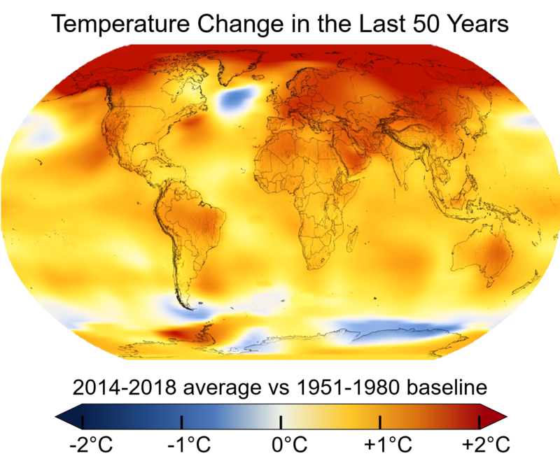
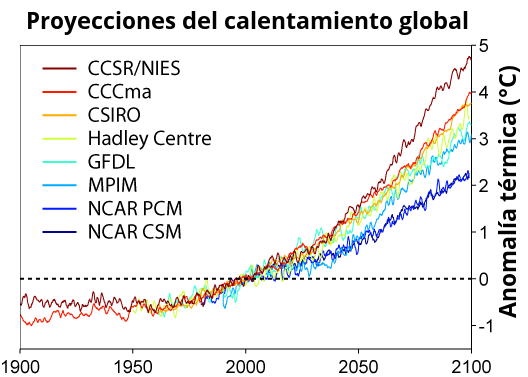

Cambios de temperatura observados
El registro de temperaturas muestra las fluctuaciones de la temperatura de la atmósfera y de los océanos a través de varios tramos de tiempo. La información más detallada existente comienza en 1850, cuando empiezan los registros metódicos de termometría. Existen numerosas estimaciones de temperaturas desde finales de la glaciación del Pleistoceno, particularmente durante la época del Holoceno, y periodos más antiguos son estudiados por la paleoclimatología.
Los cambios de temperatura varían a lo largo del mundo, pero desde 1880, la temperatura promedio de la superficie de la Tierra ha aumentado alrededor de 0,8 °C. La velocidad de calentamiento casi se duplicó en la segunda mitad de dicho periodo (0,13 ± 0,03 °C por década, versus 0,07 ± 0,02 °C por década). El efecto isla de calor es muy pequeño, estimado en menos de 0,002 °C de calentamiento por década desde 1900. Desde 1979 y según las mediciones de temperatura por satélite, las temperaturas en la troposfera inferior se han incrementado entre 0,13 y 0,22 °C por década. Los proxies climáticos demuestran que la temperatura se ha mantenido relativamente estable durante mil o dos mil años hasta 1850, con fluctuaciones que varían regionalmente tales como el Período cálido medieval y la Pequeña edad de hielo.
Modelos climáticos

Un modelo climático es una representación de los procesos físicos, químicos y biológicos que afectan el sistema climático.58 Los modelos climáticos usan métodos de investigación cuantitativa para simular las interacciones de la atmósfera terrestre, los océanos, el relieve terrestre y el hielo. Se utilizan para el estudio de la dinámica del sistema meteorológico y climático para las proyecciones del clima futuro.
Los modelos climáticos se basan en disciplinas científicas como la dinámica de fluidos y la termodinámica, así como los procesos físicos como la transferencia de radiación, es decir la energía entrante a la Tierra como las radiaciones electromagnéticas de onda corta (luz visible y ultravioleta) y la energía saliente de onda larga (infrarroja) proveniente de la radiación electromagnética de la Tierra. Los modelos se pueden usar para predecir un rango de variables tales como el movimiento local del aire, la temperatura, las nubes y otras propiedades atmosféricas; la temperatura, salinidad y circulación del océano; la capa de hielo en tierra y mar; la transferencia de calor y humedad del suelo y la vegetación a la atmósfera; y procesos químicos y biológicos, entre otros.
Los modelos relacionados con la temperatura del planeta predicen una tendencia ascendente en la temperatura superficial y un rápido incremento de la temperatura en altitudes altas. Los modelos no presuponen que el clima se calentará debido al aumento de los niveles de gases de efecto invernadero. En cambio, los modelos predicen cómo los gases de efecto invernadero interactuarán con la transferencia de radiación y otros procesos físicos. El enfriamiento o calentamiento es por tanto un resultado, no un supuesto, de los modelos.